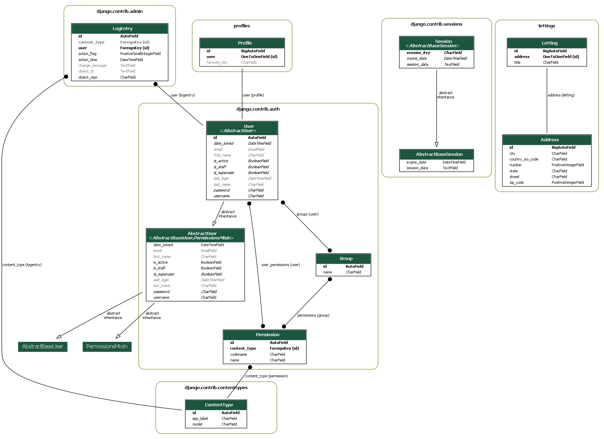

da_python_p13_oc-lettings-site
Contents:
Project Description
Prerequisites
Clone the Repository
Create the Virtual Environment
Run the Site
Generate a New Django SECRET_KEY
Linting
Tests & Coverage
Database
Admin Panel
Building and Deploying
Building and Deploying
Profiles Models
Profiles Views
Lettings Models
Lettings Views
OC Lettings Site Views
Project UML Diagram
da_python_p13_oc-lettings-site
Project UML Diagram
View page source
Project UML Diagram
Here is the UML diagram of our project:
